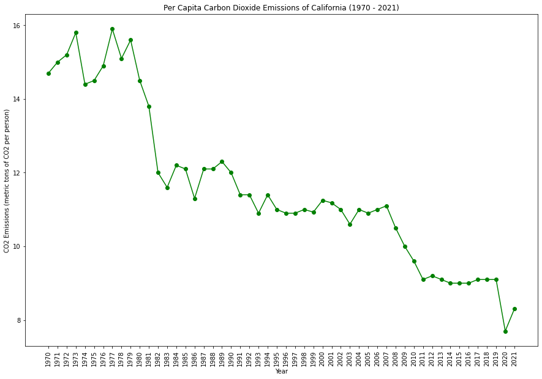
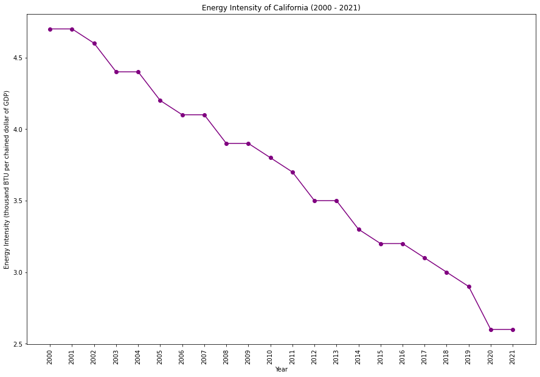

|  | |
|  |
California has been a pioneer in environmental initiatives, consistently leading in renewable energy adoption and emission reduction efforts. The state has set ambitious goals for carbon neutrality and has implemented various policies to promote clean energy and sustainable practices. Despite facing challenges like wildfires, California remains at the forefront of environmental innovation.